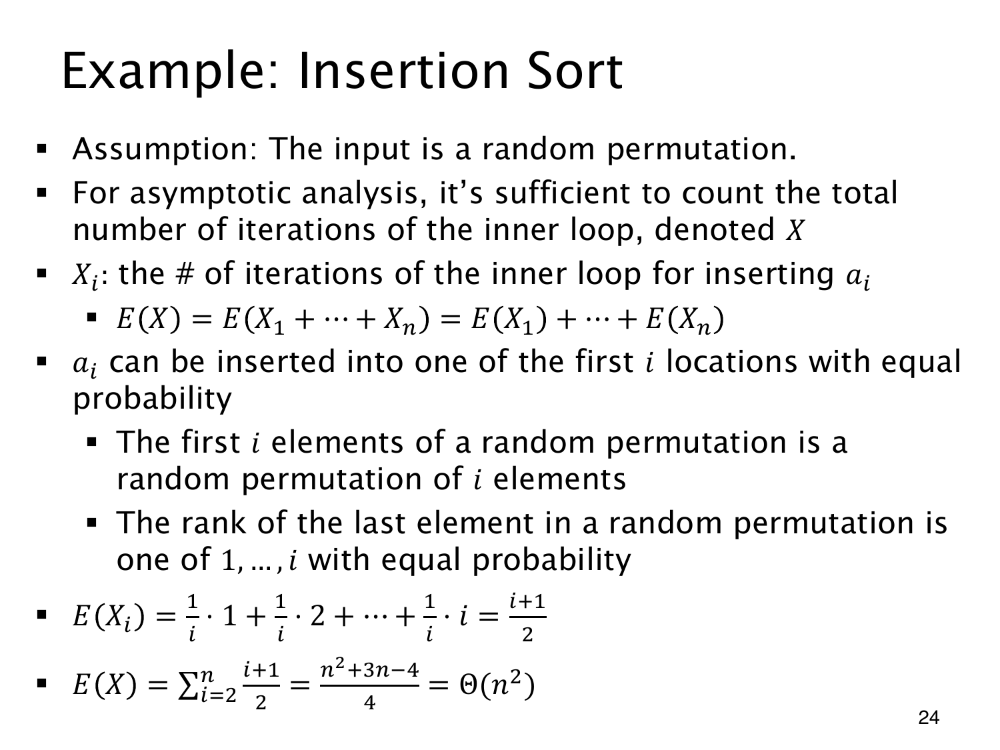

L1.11 · 第 24 页讲解原文
查看这一页课件

随机排列下的插入代价
输入为 n 个不同元素的均匀随机排列。第 i 轮的新元素在前 i 个元素中的秩 Ri 均匀取 1,…,i。
若秩为 r，前面有 i−r 个更大的元素要右移。按循环体执行次数计，
E(第 i 轮右移数)=i1r=1∑i(i−r)=2i−1,
故总右移次数期望为
i=2∑n2i−1=4n(n−1).
课件取值 1 到 i、均值 (i+1)/2，对应“右移次数再加最终一次 while 条件检查”。按此口径，总期望才是
i=2∑n2i+1=4n2+3n−4.
两者相差 n−1，都为 Θ(n2)。原页将后一种精确计数称为循环体 iterations 不够准确，已有勘误保留；平均平方级的结论不受影响。
相加各轮期望用的是线性性，不要求各轮代价独立。相对秩均匀则依赖随机排列假设，不能把这个均值直接用于已排序输入或其他输入分布。
查看本页勘误
内循环次数的计数口径
原页 E(X_i)=(i+1)/2 适用于每轮 while 条件检查次数（右移数加最后一次检查），不适用于 while 循环体/右移次数。后者取值 0…i−1，均值 (i−1)/2，总期望 n(n−1)/4；前者总期望 (n²+3n−4)/4。两者均为 Θ(n²)。原页保留，讲解区分这两种计数。